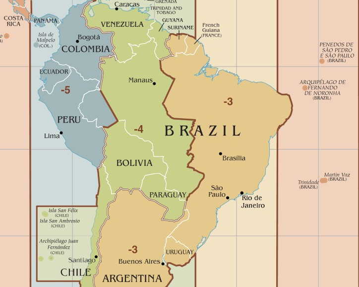

|  |
|
|
|
|
Fuso Horários: Brasil
O Brasil possui 4 fuso-horários em seu território,
tendo por padrão o da capital Brasília.
(Exibido ao lado)
Horário Padrão de Fernando de Noronha
Ilha Fernando de Noronha (GMT-2)
Horário Padrão de Brasília
Brasília (GMT-3)
Horário Padrão do Amazonas
Manaus - AM (GMT-4)
Horário Padrão do Acre
Rio Branco (GMT-5)
|
|
|
|
|